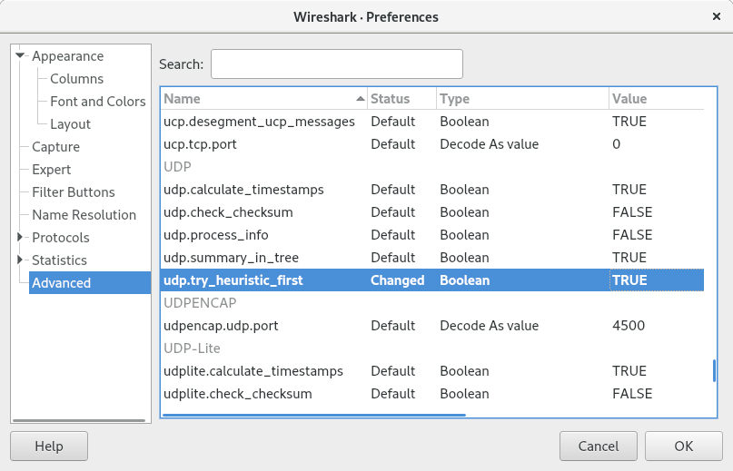

Using TShark & Wireshark to analyse SRT traffic
Wireshark is a free and open-source packet analyzer. It is a very powerful tools to analyse network traffic, such as a connection.
Since version 3.0 Wireshark supports the SRT protocol and display filters can be applied to find particular elements of a SRT stream easily
TShark is a terminal oriented version of Wireshark designed for capturing and displaying packets when an interactive user interface isn't necessary or available.
Both tools - TShark and Wireshark with GUI - can be used to create packet captures, which are helpful to reproduce errors remotely or to feed other analysis tools such as lib-tcpdump-processing.
If you only want to capture files and do the analysis on a remote machine, installation of TShark is sufficient.
Installation
Installing TShark & Wireshark on CentOS
TShark on CentOS is part of the CLI-version of Wireshark. To install use following command:
sudo yum install wireshark
This will install tshark in /usr/sbin/tshark
To install Wireshark with GUI, do the following:
sudo yum install wireshark-gnome
Installing TShark & Wireshark on Ubuntu 18.04 LTS
Ubuntu 18.04 only provides Wireshark version 2.6, which has no native SRT support. To install the desired 3.0 or higher version, you could either build Wireshark yourself or follow the instructions from launchpad to get a binary package.
Basically you would add a Personal Package Archive (PPA) to your package repository with following 3 commands. For detailed instructions check the launchpad page at link above.
sudo add-apt-repository ppa:wireshark-dev/stable
sudo apt-get update
sudo apt install wireshark tshark
To install the GUI version of Wireshark use following command after adding the PPA:
sudo apt-get install wireshark-qt
Installing TShark & Wireshark on Ubuntu 19+
Recent versions of Ubuntu serve version 3+ versions of TShark & Wireshark.
sudo apt-get update
sudo apt install wireshark tshark
To install the GUI version of Wireshark use following command:
sudo apt-get install wireshark-qt
Installing TShark & Wireshark on MacOS and Windows
Please download the Wireshark installer for MacOS or Windows directly from the Wireshark download site and follow the instructions of the installer. TShark installation can be optionally selected (default is on).
Using TShark to capture network traffic
In order to get best results for further analysis, the network capture should be started before the SRT connection is initiated. So we capture the SRT handshake as well, which can be useful later on.
Linux & MacOS
Let's assume you are receiving a SRT stream on UDP port 4200 and want to capture it. First you want to make sure, that you are capturing the traffic on the right interface. If your system has multiple network interfaces you could use following command to list all available interfaces: (depending on your settings, you might need root privileges, which can be granted with sudocommand)
Most Linux systems:
sudo ip a
MacOS and some Linux systems:
sudo ifconfig
Once you have identified the interface of your choice run following command: (some systems might need root priviliges to execute packet captures. Use sudocommand then)
tshark -i enp9s0 -f "udp port 4200" -s 1500 -w ./rcv-SRT.pcapng
-i enp9s0specifies the interface. Depending on your system this could also be-i eth0or-i eno1or whatever the particular interface is named like-f "udp port 4200"specifies a filter rule to only capture UDP packets on port 4200-s 1500defines the snapshot length to capture, in this case 1500 bytes per packet-w ./rcv-SRT.pcapngsets the path and filename in which the captured data is written. In this case in the same directory that you are currently in with the file namercv-SRT.pcapng
Windows
The procedure on Windows is quite similar, however the naming conventions for the network adapters can be a confusing.
With following command you can found out IP addresses of your network interfaces:
ipconfig /all
Note down the name of the Ethernet adapter of your choice with the correct IP address that you were looking for. In this example we are looking at Ethernet adapter Local Area Connection 2: Now point your shell (Terminal / PowerShell) to the Wireshark directory, which is per default: c:\Program Files\Wireshark and execute following command:
tshark.exe -D
The option -D lists all interfaces, unfortunately without IP address. But we already identified the IP with the ipconfig command in the prior step. The output would give you something like this:
c:\Program Files\Wireshark>tshark.exe -D
1. \Device\NPF_{C4423365-7B46-493C-95E8-2F009A099E0A} (VMware Network Adapter VMnet8)
2. \Device\NPF_{78032B7E-4968-42D3-9F37-287EA86C0AAA} (Local Area Connection* 10)
3. \Device\NPF_{B9A7544E-73D8-4533-BC46-C3A2B99D68BF} (VirtualBox Host-Only Network)
4. \Device\NPF_NdisWanIp (NdisWan Adapter)
5. \Device\NPF_{A0B05D56-015A-4045-832F-E244BC32F9DC} (Local Area Connection)
6. \Device\NPF_NdisWanBh (NdisWan Adapter)
7. \Device\NPF_NdisWanIpv6 (NdisWan Adapter)
8. \Device\NPF_{03564282-7495-4FB5-98A2-CF349E10BE23} (Local Area Connection 2)
9. \Device\NPF_{663F8BBF-7C41-494B-B2BA-269DA97B8B49} (VMware Network Adapter VMnet1)
10. \Device\NPF_{3556DA2E-DEC6-410B-B791-E82CC8ABF216} (Local Area Connection 10)
11. \Device\NPF_Loopback (Adapter for loopback traffic capture)
12. \Device\NPF_{1949D5F2-F562-4C4E-8665-EABC55BFBFFC} (Local Area Connection 4)
13. \Device\NPF_{F4A0A87F-5DB3-42E5-A29E-C061045C1E99} (Local Area Connection 11)
The adapter of our choice in this example ( Ethernet adapter Local Area Connection 2 ) has the ID 8.
Finally we can use the ID 8 to perform the network capture by issuing following command:
tshark.exe -i 8 -f "udp port 4200" -s 1500 -w c:\temp\rcv-SRT.pcapng
Best practice tips
-
start the capture before starting the SRT transmission
-
name the .pcapng files in a way, which gives you a clue later on. For example use
rcvorsndin filename and maybe something liketestrun-1or other identifiers, which help to understand what you did later on -
on Linux and MacOS you can specify a particular length of time to run the capture with help of
timeoutcommand. For example use following command to capture 30 seconds of traffic
sudo timeout 30 tshark -i enp9s0 -f "udp port 4900" -s 1500 -w ./rcv-SRT.pcapng
-
to stop a capture without
timeoutgiven just use the keyboard commandCTRL + C -
timeout on Windows works a bit different. To perform a 30 second capture you can use:
start "" app.exe & timeout /t 30 & taskkill /im app.exe /f
for our example this would result in:
start "" tshark.exe -i 8 -f "udp port 4200" -s 1500 -w c:\temp\rcv-SRT.pcapng & timeout 30 & taskkill /im tshark.exe /f
Analysing the .pcapng capture file
lib-tcpdump-processing
Specifically for network captures of SRT streams you can use the python scripts out of the library lib-tcpdump-processing provided by Maria Sharabayko. It's a great set of tools to analyse details of an SRT stream and get details quickly.
Example output of the get-traffic-stats script:
Overall UDP rate: 7.501 Mbps
SRT Data org+rexmit pld: 7.367 Mbps
SRT Data org payload: 6.665 Mbps
SRT Data overhead: 1.824%
SRT Data missing: 0.000%
SRT Data rexmit overhead: 10.723%
SRT ACK overhead: 0.286%
SRT ACKACK overhead: 0.286%
SRT NAK overhead: 0.162%
===========================================
SRT overall overhead: 11.325%
SRT Data packets (org): 19913
SRT retransmitted: 719 packets (2097 retransmissions)
SRT DATA retransmisions: 10.531% × DATA packets
SRT retransmitted: 3.611% of original packets
including retransmitted:
once: 0.015% of original packets
twice: 0.291% of original packets
3×: 3.284% of original packets
4×: 0.020% of original packets
more: 0.000% of original packets
For further documentation and examples please visit the website: lib-tcpdump-processing
Wireshark GUI
Before you can get started with analysing SRT in the Wireshark GUI, you need to uncheck interpretation of UDT packets in Wireshark. To do that, click on Analyse in the menu bar on top and select Enabled Protocols from the dropdown menu. (keyboard shortcut: CTRL+SHIFT+E).
Now search for UDT and uncheck the UDT-options which are displayed like shown in picture below.

Now you can import your captured .pcapng file or start a live capture from inside the Wireshark GUI.
A list of possible "display filters" for the SRT protocol can be found at the Wireshark SRT Display Filter Reference page.
There are cases when Wireshark will not pass the remainder of the UDP packet to sub-dissectors.
SRT is a sub-dissector of UDP.
This case is in the decode_udp_ports function of Wireshark, and has the following comment description:
Do lookups with the subdissector table.
We try the port number with the lower value first, followed by the
port number with the higher value. This means that, for packets
where a dissector is registered for both port numbers:
1) we pick the same dissector for traffic going in both directions;
2) we prefer the port number that's more likely to be the right
one (as that prefers well-known ports to reserved ports);
although there is, of course, no guarantee that any such strategy
will always pick the right port number.
XXX - we ignore port numbers of 0, as some dissectors use a port
number of 0 to disable the port, and as RFC 768 says that the source
port in UDP datagrams is optional and is 0 if not used.
:exclamation: Wireshark offers a workaround for this. You have to set the following advanced option:
Edit -> Preferences -> Advanced: udp.try_heuristic_first = TRUE.
This will make a UDP packet to be passes to sub-dissectors first.
